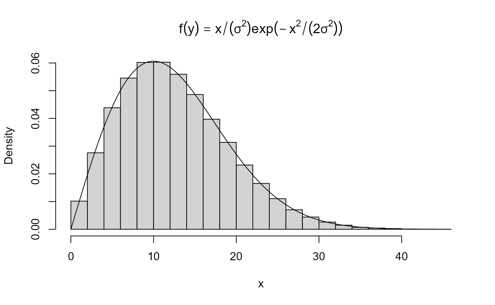
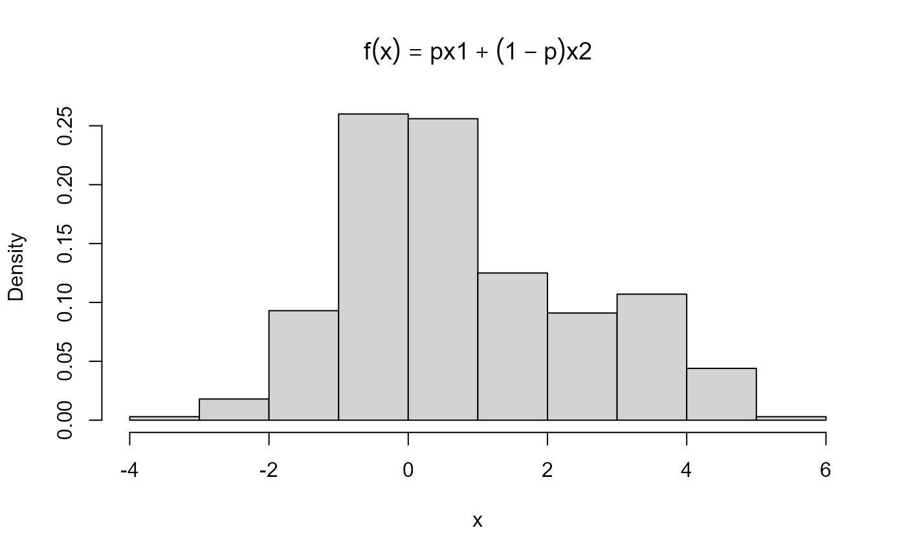
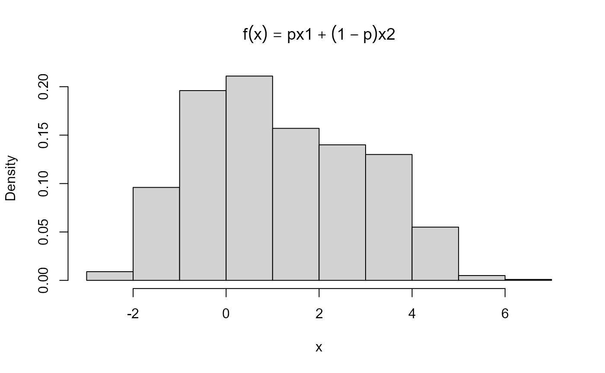
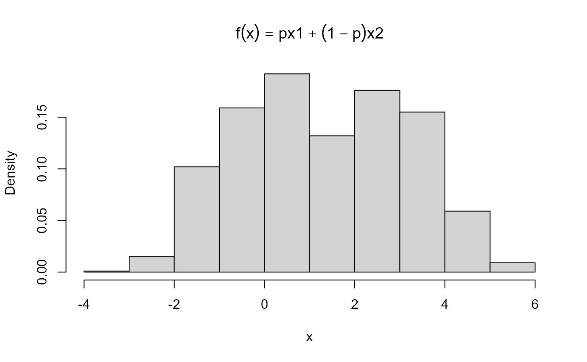
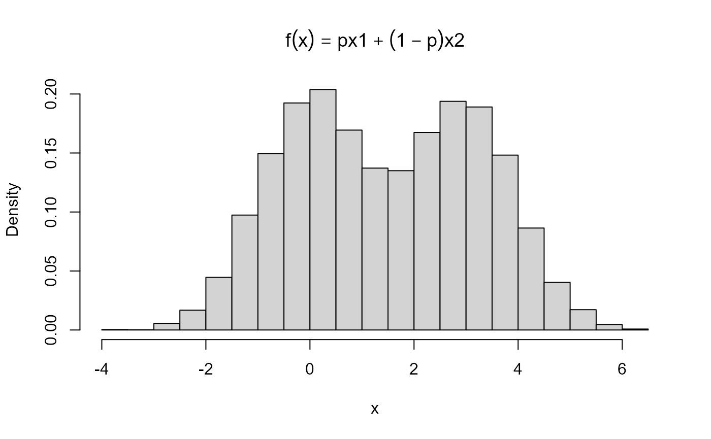
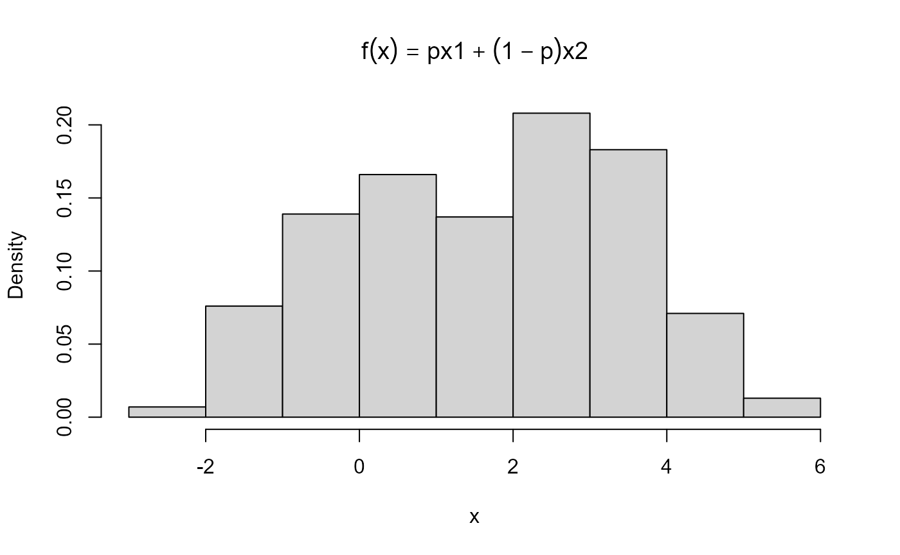
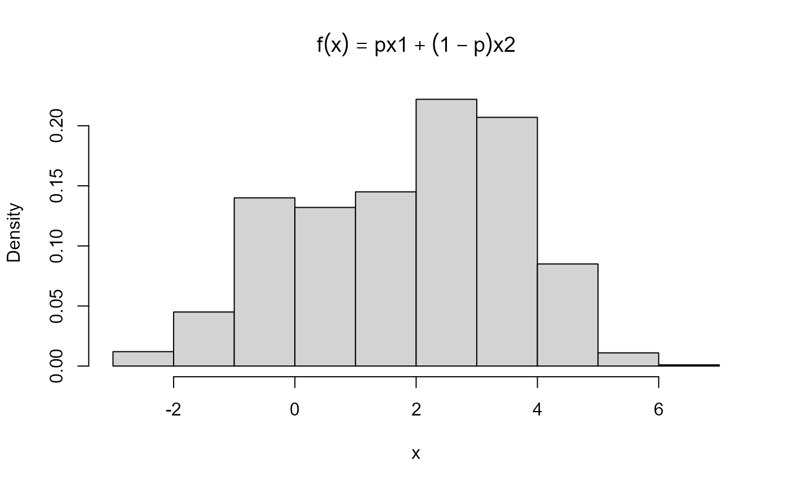

homework
Rongkang Xiong
homework.Rmd
library(StatComp21049)The homework 0 2021—09—16
Example 1
1.italics斜体 This txt will apper italicized!
2.old加粗 This txt will apper italicized!
3.Headings 标题 ## This is a secondary heading 二级标题 ### This is a tertiary heading 小标题
4.Unordered Lists 无序数据列 - first item in list - second item in list - third item in list
5.Ordered Lists 有序数据列 1. first item in list 2. second item in list 3. third item in list
6.Links超链接 Johns Hopkin Bloomberg School of Public Health Download R
7.Advanced Linking 超链接 I spend so much time reading [R bloggers][1] and [Simply Statistics][2]! [1]: http://www.r-bloggers.com/ “R bloggers” [2]: http://simplystatistics.org/ “Simply Statistics”
8.Newlines 换行 换行需要在句尾加上双空格
plot(1:5, 1:5, xlim = c(0,6), ylim = c (0,6), type = "n")
text(x = 3, y = 3, labels = "R for beginner")

The homework 1 2021-09-23
Answer
3.4:
The Rayleigh density [156, Ch. 18] is \[ f(x)=\frac{x}{\sigma^{2}} e^{-x^{2} /\left(2 \sigma^{2}\right)}, \quad x \geq 0, \sigma>0 \] Develop an algorithm to generate random samples from a Rayleigh(σ) distribution. Generate Rayleigh(σ) samples for several choices of σ > 0 and check that the mode of the generated samples is close to the theoretical mode σ (check the histogram).
解： 取 \(\sigma=0.1\)
rm(list=ls())
0.1->sigma;1e5->n;k<-1;numeric(n)->x
while (k<n) {
runif(1)->u
x[k]<-sqrt(2*log(1/u))*sigma; #骞夸箟鍧囧寑鍒嗗竷鍜屽崟浣嶅潎鍖€鍒嗗竷NAk+1->k
}
hist(x,prob=TRUE,main=expression(f(y)==x/(sigma^2)*exp(-x^2/(2*sigma^2))))
t<-seq(0,0.5,0.01)
lines(t,t/(sigma^2)*exp(-t^2/(2*sigma^2)))取 \(\sigma=1\)
rm(list=ls())
1->sigma;1e5->n;k<-1;numeric(n)->x
while (k<n) {
runif(1)->u
x[k]<-sqrt(2*log(1/u))*sigma; #骞夸箟鍧囧寑鍒嗗竷鍜屽崟浣嶅潎鍖€鍒嗗竷NAk <- k+1
}
hist(x,prob=TRUE,main=expression(f(y)==x/(sigma^2)*exp(-x^2/(2*sigma^2))))
t<-seq(0,6,0.01)
lines(t,t/(sigma^2)*exp(-t^2/(2*sigma^2)))取 \(\sigma=10\)
rm(list=ls())
10->sigma;1e5->n;k<-1;numeric(n)->x
while (k<n) {
runif(1)->u
x[k]<-sqrt(2*log(1/u))*sigma; #骞夸箟鍧囧寑鍒嗗竷鍜屽崟浣嶅潎鍖€鍒嗗竷NAk <- k+1
}
hist(x,prob=TRUE,main=expression(f(y)==x/(sigma^2)*exp(-x^2/(2*sigma^2)),sigma==1))
t<-seq(0,40,0.01)
lines(t,t/(sigma^2)*exp(-t^2/(2*sigma^2))) #### 3.11:
Generate a random sample of size 1000 from a normal location mixture. The components of the mixture have \(N(0, 1)\) and \(N(3, 1)\) distributions with mixing probabilities \(p_1\) and \(p_2 = 1 − p_1\). Graph the histogram of the sample with density superimposed, for \(p_1 = 0.75\). Repeat with different values for \(p_1\) and observe whether the empirical distribution of the mixture appears to be bimodal. Make a conjecture about the values of p1 that produce bimodal mixtures.
解：
rm(list=ls())
p<-0.75
n<-1e3;
x1<-rnorm(n,0,1)
x2<-rnorm(n,3,1)
x<-numeric(n)
k=1
while(k<n){
u<-runif(1)
if (u<=p) x[k]<-x1[k] else x[k]<-x2[k]
k+1->k
}
hist(x,prob=TRUE,main=expression(f(x)==p*x1+(1-p)*x2))
rm(list=ls())
p<-0.6
n<-1e3;
x1<-rnorm(n,0,1)
x2<-rnorm(n,3,1)
x<-numeric(n)
k=1
while(k<n){
u<-runif(1)
if (u<=p) x[k]<-x1[k] else x[k]<-x2[k]
k+1->k
}
hist(x,prob=TRUE,main=expression(f(x)==p*x1+(1-p)*x2))
rm(list=ls())
p<-0.55
n<-1e3
x1<-rnorm(n,0,1)
x2<-rnorm(n,3,1)
x<-numeric(n)
k=1
while(k<n){
u<-runif(1)
if (u<=p) x[k]<-x1[k] else x[k]<-x2[k]
k+1->k
}
hist(x,prob=TRUE,main=expression(f(x)==p*x1+(1-p)*x2))
rm(list=ls())
p<-0.5
n<-1e4;
x1<-rnorm(n,0,1)
x2<-rnorm(n,3,1)
x<-numeric(n)
k=1
while(k<n){
u<-runif(1)
if (u<=p) x[k]<-x1[k] else x[k]<-x2[k]
k <- k+1
}
hist(x,prob=TRUE,main=expression(f(x)==p*x1+(1-p)*x2))
rm(list=ls())
p<-0.45
n<-1e3;
x1<-rnorm(n,0,1)
x2<-rnorm(n,3,1)
x<-numeric(n)
k=1
while(k<n){
u<-runif(1)
if (u<=p) x[k]<-x1[k] else x[k]<-x2[k]
k <- k+1
}
hist(x,prob=TRUE,main=expression(f(x)==p*x1+(1-p)*x2))
rm(list=ls())
p<-0.4
n<-1e3;
x1<-rnorm(n,0,1)
x2<-rnorm(n,3,1)
x<-numeric(n)
k=1
while(k<n){
u<-runif(1)
if (u<=p) x[k]<-x1[k] else x[k]<-x2[k]
k <- k+1
}
hist(x,prob=TRUE,main=expression(f(x)==p*x1+(1-p)*x2))
rm(list=ls())
p<-0.35
n<-1e3;
x1<-rnorm(n,0,1)
x2<-rnorm(n,3,1)
x<-numeric(n)
k=1
while(k<n){
u<-runif(1)
if (u<=p) x[k]<-x1[k] else x[k]<-x2[k]
k <- k+1
}
hist(x,prob=TRUE,main=expression(f(x)==p*x1+(1-p)*x2))所以\(P\in (0.45-0.55)\)左右时，会产生双峰分布
3.20:
A compound Poisson process is a stochastic process \(\{X(t), t ≥ 0\}\) that can be represented as the random sum \(X(t) =\sum_{i=1}^{N(t)} Yi, t ≥ 0, where \{N(t), t ≥ 0\}\) is a Poisson process and \(Y_1, Y_2,...\)are \(iid\) and independent of \(\{N(t), t ≥ 0\}.\) Write a program to simulate a compound \(Poisson(λ)–Gamma \ process (Y \ has \ a \ Gamma\ distribution)\). Estimate the mean and the variance of \(X(10)\) for several choices of the parameters and compare with the theoretical values. Hint: Show that\(E[X(t)] = λtE[Y1]\) and\(Var(X(t)) = λtE[Y_1^{2}]\).
解：
\({Y_i}\)是Gamma分布，\(N(t)\)是泊松过程
In R, the Gamma distribution with parameters \(shape = a\) and \(scale = s\) has density \[f(x)= \frac{1}{s^a\Gamma(a)} x^{a-1} e^{-x/s},\quad x\geq 0, a>0,s>0\] You can use “rgamma(n,shape=a,scale=s)” to generate n gamma random numbers.
\[E[X]=\frac{\alpha}{\lambda}=as, \quad \operatorname{Var}(X)=\frac{\alpha}{\lambda^{2}}=as^2 \\ (E[X])^2 = a^2s^2, \quad E[X^2]= Var(X)+(E(X))^2=as^2+a^2s^2 \]
泊松分布 \[P(X=k)=\frac{\lambda^k}{k!}e^{-\lambda},\quad k=0,1,...\] 泊松过程 \[P(X(t)=k)=\frac{(\lambda t)^k}{k!}e^{-\lambda t},\quad k=0,1,...\] You can use “rpois(n,lambda)” to generate n Poison random numbers.
1) Generate n Poison distribution random numbers. 2) Generate n Gamma distribution random numbers. 3) 根据泊松分布的值Np(t)，对Y的前Np项进行求和作为X(t)的值
画出\(Poisson(\lambda)-gamma\ process\)
rm(list=ls())
lambda.poison<-2
lambda.gamma<-1
a = 1
n<-1e3
Npoison<-numeric(n)
k<-1
while(k<=n){
Npoison[k]<-rpois(1,lambda.poison*k)
k <- k+1
}
maxp<- max(Npoison)
Y<-rgamma(maxp,shape = a,scale =1/lambda.gamma)
x<-numeric(n)
k<-1
while(k<=n){
x[k]<-sum(Y[1:Npoison[k]])
k+1->k
}
plot(x)(1)对\(X(10)\)进行模拟计算
rm(list=ls())
lambda.poison<-2
lambda.gamma<-1
a = 1
t=10
n<-1e4
k<-1
x<-numeric(n)
while(k<=n){
Npoison<-rpois(1,lambda.poison*t)
Y<-rgamma(Npoison,shape = a,scale =1/lambda.gamma)
x[k]<-sum(Y[1:Npoison])
k+1->k
}
paste('E[X(10)]=',mean(x))
#> [1] "E[X(10)]= 19.9689874276965"
paste('Var(X(10)=',var(x))
#> [1] "Var(X(10)= 40.9755736885445"理论计算值 \[ E[X(t)]=\lambda t E[Y_1]=10\lambda a/\lambda_{gamma} \\ Var[x]=\lambda t E[Y_1^2]=10\lambda (a+a^2)/\lambda_{gamma}^2 \]
rm(list=ls())
lambda.poison<-2
lambda.gamma<-1
a = 1
Ex10<-10*lambda.poison*a/lambda.gamma
Var10<-10*lambda.poison*(a+a^2)/lambda.gamma^2
paste("E[X(10)]=",Ex10,",Var[X(10)]=",Var10)
#> [1] "E[X(10)]= 20 ,Var[X(10)]= 40"(2)对\(X(10)\)进行模拟计算
rm(list=ls())
lambda.poison<-2
lambda.gamma<-2
a = 1
t=10
n<-1e4
k<-1
x<-numeric(n)
while(k<=n){
Npoison<-rpois(1,lambda.poison*t)
Y<-rgamma(Npoison,shape = a,scale =1/lambda.gamma)
x[k]<-sum(Y[1:Npoison])
k+1->k
}
paste('E[X(10)]=',mean(x))
#> [1] "E[X(10)]= 10.0104322213961"
paste('Var(X(10)=',var(x))
#> [1] "Var(X(10)= 10.0493887537351"理论计算值： \[ E[X(t)]=\lambda t E[Y_1]=10\lambda a/\lambda_{gamma} \\ Var[x]=\lambda t E[Y_1^2]=10\lambda (a+a^2)/\lambda_{gamma}^2 \]
rm(list=ls())
lambda.poison<-2
lambda.gamma<-2
a = 1
Ex10<-10*lambda.poison*a/lambda.gamma
Var10<-10*lambda.poison*(a+a^2)/lambda.gamma^2
paste("E[X(10)]=",Ex10,",Var[X(10)]=",Var10)
#> [1] "E[X(10)]= 10 ,Var[X(10)]= 10"(3)对\(X(10)\)进行模拟计算
rm(list=ls())
lambda.poison<-5
lambda.gamma<-4
a = 2
t=10
n<-1e4
k<-1
x<-numeric(n)
while(k<=n){
Npoison<-rpois(1,lambda.poison*t)
Y<-rgamma(Npoison,shape = a,scale =1/lambda.gamma)
x[k]<-sum(Y[1:Npoison])
k+1->k
}
paste('E[X(10)]=',mean(x),'Var(X(10)=',var(x))
#> [1] "E[X(10)]= 24.967313500404 Var(X(10)= 18.6365123640225"理论计算值： \[ E[X(t)]=\lambda t E[Y_1]=10\lambda a/\lambda_{gamma} \\ Var[x]=\lambda t E[Y_1^2]=10\lambda (a+a^2)/\lambda_{gamma}^2 \]
rm(list=ls())
lambda.poison<-5
lambda.gamma<-4
a = 2
Ex10<-10*lambda.poison*a/lambda.gamma
Var10<-10*lambda.poison*(a+a^2)/lambda.gamma^2
paste("E[X(10)]=",Ex10,",Var[X(10)]=",Var10)
#> [1] "E[X(10)]= 25 ,Var[X(10)]= 18.75"The homework 2 2021-09-30
Answer
5.4
Write a function to compute a Monte Carlo estimate of the \(\operatorname{Beta}(3,3)\) cdf, and use the function to estimate \(F(x)\) for \(x=0.1,0.2, \ldots, 0.9\). Compare the estimates with the values returned by the pbeta function in \(R\).
解： \(Beta(x;a,b)\)分布的概率密度函数为 \[ f(x;a,b)=\frac{1}{B(a,b)} x^{a-1}(1-x)^{b-1} \] Beta函数定义：
\[ B(a,b)=\int_{0}^{1} t^{a-1}(1-t)^{b-1} d t \] \(pbeta\)的定义： \[pbeta(x,a,b) =\frac{1}{B(a,b)} \int _0^x t^{a-1}(1-t)^{b-1}dt\] \[ B(3, 3)=\int_{0}^{1} t^{2}(1-t)^{2} d t \] 首先我们计算\(B(3,3)\)的积分估计 \[ B(3,3)=\int_{0}^{1} t^{2}(1-t)^{2} d t=E[t^2(1-t)^2] , \quad t\sim U(0,1) \] 然后可以计算\(pbeta(x,3,3)\)的估计 \[ pbeta(x,3,3) =\frac{1}{B(3,3)} \int _0^x t^{2}(1-t)^{2}dt = \frac{x}{B(3,3)}E[t^2(1-t)^2],\quad t\sim U(0,x) \]
m<-1e4;x<-runif(m,min=0,max=1)
theta.hat <- mean(x^2*(1-x)^2)
result = matrix(0,1,2)
result[1,1] = theta.hat
result[1,2] = beta(3,3)
rownames(result) = c("Beta(3,3)")
colnames(result) = c("Estimate", "Theoretical")
result
#> Estimate Theoretical
#> Beta(3,3) 0.03340309 0.03333333编写求cdf的函数：
rm(list=ls())
pbetaCDF <- function(x,a,b) {
pbetax<-numeric(length(x))
m<-1e6;
y<-runif(m,min=0,max=1)
Beta_a_b <- mean(y^(a-1)*(1-y)^(b-1))
for(i in 1:length(x)){
n<-1e6;
y<-runif(n,min=0,max = x[i])
Beta_x <- x[i]*mean(y^(a-1)*(1-y)^(b-1))
pbetax[i] <- Beta_x/Beta_a_b
}
return(pbetax)
}
x<-seq(0.1,1,0.1)
y<-pbetaCDF(x,3,3)
print(y)
#> [1] 0.008557496 0.057888829 0.163017738 0.317519440 0.499801124 0.682542079
#> [7] 0.836513134 0.942156036 0.992122415 1.001122174比较自定义函数和pbeta函数
x<-seq(0.1,1,0.1)
result = matrix(0,3,length(x))
result[1,1:length(x)] = x
result[2,1:length(x)] = pbetaCDF(x,3,3)
result[3,1:length(x)] = pbeta(x,3,3)
rownames(result) = c("x","pbetaCDF(3,3)","pbeta(x,3,3)")
colnames(result) = c(x)
result
#> 0.1 0.2 0.3 0.4 0.5 0.6
#> x 0.100000000 0.20000000 0.3000000 0.4000000 0.5000000 0.600000
#> pbetaCDF(3,3) 0.008550927 0.05788951 0.1628465 0.3168958 0.4991435 0.682009
#> pbeta(x,3,3) 0.008560000 0.05792000 0.1630800 0.3174400 0.5000000 0.682560
#> 0.7 0.8 0.9 1
#> x 0.700000 0.8000000 0.900000 1.0000000
#> pbetaCDF(3,3) 0.836159 0.9411581 0.990621 0.9991613
#> pbeta(x,3,3) 0.836920 0.9420800 0.991440 1.00000005.9
The Rayleigh density \([156,(18.76)]\) is \[ f(x)=\frac{x}{\sigma^{2}} e^{-x^{2} /\left(2 \sigma^{2}\right)}, \quad x \geq 0, \sigma>0 \] Implement a function to generate samples from a Rayleigh \((\sigma)\) distribution, using antithetic variables. What is the percent reduction in variance of \(\frac{X+X^{\prime}}{2}\) compared with \(\frac{X_{1}+X_{2}}{2}\) for independent \(X_{1}, X_{2} ?\)
解： \[ \begin{align} & F(x) = \int_0^x \frac{t}{\sigma^{2}} e^{-t^{2} /\left(2 \sigma^{2}\right)}dt=1-e^{-x^2/{2\sigma^2}} \\ & y=1-e^{-x^2/{2\sigma^2}} \\ &\Rightarrow x =\sigma\sqrt{-2ln(1-y)} \\ & \Rightarrow x' =\sigma\sqrt{-2ln(y)} , \quad y\in[0,1] \end{align} \] 因此方差 \[ \begin{align} E(X) &= \sigma^2\int_0^1 \sqrt{-2ln(1-y)}dy=\sqrt{\frac{\pi}{2}}\sigma \\ E(X') &= \sigma^2\int_0^1 \sqrt{-2ln(y)}dy=\sqrt{\frac{\pi}{2}}\sigma \\ Var(X) & = \sigma^2\int_0^1 (\sqrt{-2ln(1-y)}-\sqrt{\frac{\pi}{2}})^2dy = (2-\frac{\pi}{2})\sigma^2\\ Var(X') &= \sigma^2\int_0^1 (\sqrt{-2ln(y)}-\sqrt{\frac{\pi}{2}})^2dy =(2-\frac{\pi}{2})\sigma^2 \\ Cov(X,X') &= \sigma^2 \int_0^1 (\sqrt{-2ln(1-y)}-\sqrt{\frac{\pi}{2}})(\sqrt{-2ln(y)}-\sqrt{\frac{\pi}{2}})dy\\ Var(\frac{X+X'}{2}) &= (Var(X)+Var({X'})+2Cov(X,X'))/4 \\ &=1-\frac{\pi}{4}+\frac{1}{2}\sigma^2 \int_0^1 (\sqrt{-2ln(1-y)}-\sqrt{\frac{\pi}{2}})(\sqrt{-2ln(y)}-\sqrt{\frac{\pi}{2}})dy \end{align} \] 两个独立的随机变量的方差 \[ \begin{align} Cov(X_1,X_2) &= 0 \\ Var(X_1) &= Var(X_2)=\sigma^2\int_0^1 (\sqrt{-2ln(1-y)}-\sqrt{\frac{\pi}{2}})^2dy = (2-\frac{\pi}{2})\sigma^2\\ \\ Var(\frac{X_1+X_2}{2}) &=(Var(X_1)+Var(X_2))/4 = 1-\frac{\pi}{4} \\ \end{align} \] 因此方差减小的百分比为 \[ \begin{align} Percent \ reduction &=\frac{(Var_x-Var_{x'})}{Var_x}\times 100\% \\ &=\frac{2}{\pi-4}\int_0^1 (\sqrt{-2ln(1-y)}-\sqrt{\frac{\pi}{2}})(\sqrt{-2ln(y)}-\sqrt{\frac{\pi}{2}})dy \times 100\% \\ \end{align} \] (1)求协方差积分 \[ \frac{1}{\sigma^2}Cov(X,X') = \int_0^1 (\sqrt{-2ln(1-y)}-\sqrt{\frac{\pi}{2}})(\sqrt{-2ln(y)}-\sqrt{\frac{\pi}{2}})dy \]
rm(list=ls())
m<-1e5;y<-runif(m)
covx12 <- mean((sqrt(-2*log(y))-sqrt(pi/2))*(sqrt(-2*log(1-y))-sqrt(pi/2)))
paste("Cov(X,X') = ",covx12)(2)因此\(X,X'\)是负相关的 我们可以模拟计算理论上方差减小百分比
rm(list=ls())
m<-1e5;y<-runif(m)
covx12 <- mean((sqrt(-2*log(y))-sqrt(pi/2))*(sqrt(-2*log(1-y))-sqrt(pi/2)))
result <-matrix(0,5,1)
result[1,1] <- 2-pi/2
result[2,1] <- covx12
result[3,1] <- 1-pi/4+1/2*covx12
result[4,1] <- 1-pi/4
result[5,1] <- paste("Percent reduction = ",2/(pi-4)*covx12*100,"%")
rownames(result) = c("Var(X) = ","Cov(X,X') = ","Var((X+X')/2) =","Var((X1+X2)/2) =","Percent reduction = ")
colnames(result) = c("理论计算值")
result(3)实验上方差减小百分比
rm(list=ls())
m<-1e5;y<-runif(m)
y1<-y[1:m/2]
x1<-sqrt(-2*log(1-y1))
x2<-sqrt(-2*log(y1))
covx12<-mean((x1-mean(x1))*(x2-mean(x2)))
u1<-(x1+x2)/2
var12 <- var(u1)
x3<-sqrt(-2*log(runif(m/2)))
x4<-sqrt(-2*log(runif(m/2)))
var12in <-var((x3+x4)/2)
result <-matrix(0,6,1)
result[1,1] <- var(x1)
result[2,1] <- var(x2)
result[3,1] <- covx12
result[4,1] <- var12
result[5,1] <- var12in
result[6,1] <- paste((var12in-var12)/var12in*100,"%")
rownames(result) = c("Var(X) = ","Var(X') = ","Cov(X,X') = ","Var((X+X')/2) =","Var((X1+X2)/2) =","Percent reduction = ")
colnames(result) = c(" MC模拟计算值")
result5.13
Find two importance functions \(f_{1}\) and \(f_{2}\) that are supported on \((1, \infty)\) and are ‘close’ to \[ g(x)=\frac{x^{2}}{\sqrt{2 \pi}} e^{-x^{2} / 2}, \quad x>1 \] Which of your two importance functions should produce the smaller variance in estimating \[ \int_{1}^{\infty} \frac{x^{2}}{\sqrt{2 \pi}} e^{-x^{2} / 2} d x \] by importance sampling? Explain.
解 \[ \begin{align} \hat{\theta} &=\int_{1}^{\infty} \frac{x^{2}}{\sqrt{2 \pi}} e^{-x^{2} / 2} d x \\ & = \int_{1}^{\infty} \frac{g(x)}{f(x)}f(x)d x \\ & = \frac{1}{m} \sum_{i=1}^m \frac{g(x_i)}{f(x_i)} \end{align} \] 取 \[ \begin{align} & let \quad f_1(x) =2exe^{-x^2} ,\quad f_2(x)=e^{-x+1} \\ & F_1(x)=1-e^{1-x^2},F_2(x)=1-e^{1-x}\\ & \frac{g(x)}{f_1(x)} = \frac{x}{2e\sqrt{2\pi}}e^{x^2/2} \\ & \frac{g(x)}{f_2(x)} = \frac{x^2}{\sqrt{2\pi}}e^{x-x^2/2-1}\\ &y_1=F_1(x_1) \Rightarrow x_1= \sqrt{1-ln(1-y_1)}=\sqrt{1-ln(y_1)}\\ &y_2=F_2(x_2) \Rightarrow x_2= 1-ln(1-y_2)=1-ln(y_2) \end{align} \]
rm(list=ls())
m<-1e5
y<-runif(m,min=0,max=1)
x1<-sqrt(1-log(y))
x2<-1-log(y)
f1<-x1/(2*exp(1)*sqrt(2*pi))*exp((x1^2)/2)
f2<-x2^2/(sqrt(2*pi))*exp(x2-(x2^2)/2-1)
result = matrix(0,2,2)
result[1,1] = mean(f1)
result[1,2] = mean(f1)
result[2,1] = sd(f1)
result[2,2] = sd(f2)
rownames(result) = c("est","sd")
colnames(result) = c("f1(x)","f2(x)")
result
#> f1(x) f2(x)
#> est 0.3985729 0.3985729
#> sd 0.9580855 0.1580464Here ‘est’ is \(\hat{\theta}\) while ‘sd’ is the standard deviation of \(\frac{g(Xi )}{f (Xi )}\) instead of \(\hat{\theta}\) So \(f_2(x)=e^{-x+1}\) produce the smaller variance in estimating.
5.14
Obtain a Monte Carlo estimate of \[ \int_{1}^{\infty} \frac{x^{2}}{\sqrt{2 \pi}} e^{-x^{2} / 2} d x \] by importance sampling.
解： 和5.13中的方法一样，选取\(f_2(x)=e^{-x+1}\) \[ \begin{align} & F(x)=1-e^{1-x}\\ & \frac{g(x)}{f(x)} = \frac{x^2}{\sqrt{2\pi}}e^{x-x^2/2-1}\\ &y=F(x_2) \Rightarrow x= 1-ln(1-y)=1-ln(y) \end{align} \]
rm(list=ls())
m<-1e5
y<-runif(m,min=0,max=1)
x<-1-log(y)
f<-x^2/(sqrt(2*pi))*exp(x-(x^2)/2-1)
result = matrix(0,2,1)
result[1,1] = mean(f)
result[2,1] = sd(f)
rownames(result) = c("est","sd")
colnames(result) = c("f1(x)")
result
paste("积分估计值 theta.hat = ",mean(f))The homework 3 2021-10-14
Answer
6.5
Suppose a \(95\%\) symmetric t-interval is applied to estimate a mean, but the sample data are non-normal. Then the probability that the confidence interval covers the mean is not necessarily equal to 0.95. Use a Monte Carlo experiment to estimate the coverage probability of the t-interval for random samples of \(\chi^2_{2}\) data with sample size n = 20.
Compare your t-interval results with the simulation results in Example 6.4. (The t-interval should be more robust to departures from normality than the interval for variance.)
解:
卡方分布密度 \[
\begin{align}
\chi^2_n(x) &= \frac{1}{2^{n/2}\Gamma(n/2)} x^{n/2-1} e^{-x/2} ,\quad x>0 \\
E[X] & = n , \quad Var(X) = 2n \\
Z_1 \sim \chi^2_{n1},&Z_2 \sim \chi^2_{n2} \Rightarrow Z_1+Z_2 \sim \chi^2_{n_1+n_2}
\end{align}
\]
\[ \begin{align} &if \quad X \sim N(0,1),Y_i \sim \chi_n^2 \quad and \quad X,Y_i \quad independent \\ &\Rightarrow T=\frac{X}{\sqrt{Y_i/n}} \sim t_n \\ &\Rightarrow \sum_{i=1}^m Y_i \sim \chi_{m*n}^2 \\ &\Rightarrow T=\frac{X}{\sqrt{\sum_{i=1}^m Y_i/(n*m)}} \sim t_{n*m} \\ &\Rightarrow T=\frac{X}{\sqrt{\bar{Y}/n}} \sim t_{n*m} \\ \end{align} \]
\[ \begin{align} x_1,x_2,...x_n \sim N(0,1) \\ T = \frac{\bar{X}-\mu}{S_n/\sqrt{n}} \sim t_{n-1} \end{align} \]
rm(list = ls())
m <- 20
n <- 2
alpha <- 0.05
Y <- rchisq(m,n)
a<-t.test(Y,conf.level = 1-alpha)
paste('鍧囧€肩殑 95%t-interval:'NAaNA[NA4NA]NA)NA#> [1] "鍧囧€肩殑 95%t-interval: c(1.51947661481316, 3.53255804286008)"NAUCL <- (m-1)*var(Y)/qchisq(alpha,df=m-1)
paste('upper confidence limits UCL =',UCL)
#> [1] "upper confidence limits UCL = 8.68651431740617"
rm(list= ls())
m <- 20
n <- 2
alpha <- .05
mu0 = n
x <- rchisq(m, df = n)
LCL <- mu0+var(x)*qt(alpha/2, df = m-1)/sqrt(m)
UCL <- mu0+var(x)*qt(1-alpha/2, df = m-1)/sqrt(m)
paste('鍧囧€肩殑 95%t-interval:[',LCLC',']UCLNA']'NA)NA#> [1] "鍧囧€肩殑 95%t-interval:[ -0.0528546848887941 , 4.05285468488879 ]"NAMC实验 t-interval 包含了均值\(\mu = 2\)
A two sides \(100(1−\alpha)\%\) confidence interval of variance is given by \(\mu+\frac{S_n}{\sqrt{n}}t_{n-1}(\alpha/2),\mu+\frac{S_n}{\sqrt{n}}t_{n-1}(1-\alpha/2)\)
6.A
Use Monte Carlo simulation to investigate whether the empirical Type I error rate of the t-test is approximately equal to the nominal significance level \(\alpha\), when the sampled population is non-normal. The t-test is robust to mild departures from normality. Discuss the simulation results for the cases where the sampled population is (i) \(\chi^2_{1}\) (ii) Uniform(0,2) (iii) Exponential(rate=1).
In each case, test \(H_0 : \mu = \mu_0 \quad vs \quad H_1 : \mu \neq \mu_0\), where \(\mu_0\) is the mean of \(\chi^2_{1}\), Uniform(0,2), and Exponential(1), respectively.
解: 单样本t检验，适用于样本均值与总体均值的比较，是检验样本均值所代表的的总体均值是否与理论值有差别
I 型错误率是\(H_0\)正确，但是推翻\(H_0\)接受\(H_1\)的概率是\(\alpha\) \(E[\chi_1^2] = E[u(0,2)] =E[E(1))]= 1\)
则检验问题变成 \(H_0 : \mu = 1 \quad vs \quad H_1 : \mu \neq 1\) \(t1e = \frac{1}{m}\sum_{j=1}^m I(p_j \leq \alpha)\)
\(T^* = \frac{\bar{X}-\mu_0}{S/\sqrt{n}} \sim t(n-1)\)
(1)
rm(list=ls())
m <- 1e4 ##瀹為獙娆℃暟NAn <- 1e3 ##姣忔瀹為獙鐨勬牱鏈暟NAalpha <- 0.05
mu0 <- 1
p <- numeric(m) #瀛樺偍 p-valuesNAfor (j in 1:m){
x <- rchisq(n,df = 1)
ttest <- t.test(x,alternative = "two.sided",mu = mu0,conf.level =1- alpha)
p[j] <- ttest$p.value
}
p.hat <- mean(p < alpha)
se.hat <- sqrt(p.hat * (1 - p.hat) / m)
print(c(p.hat, se.hat))观察到的 t1e = 0.051, 估计值的标准误差是 \(\hat{se}(\hat{p}) = 0.0022\) \(t1e > \alpha\),但是在一个标准误差范围内，理论上讲,当\(\mu =1\)时,拒绝空假设的概率正好是 \(\alpha\) 模拟从经验上调查，t.test中的p值计算方法是否与理论值\(\alpha\)相一致
实验上发现，t1e和取的样本大小有关，越大和\(\alpha\)越接近，而越小，偏离越远
rm(list=ls())
m <- 1e3 ##瀹為獙娆℃暟NAn <- c(1e1,1e2,5*1e2,1e3,5*1e3,1e4,2*1e4,3*1e4,4*1e4,5*1e4,6*1e4,1e5) ##姣忔瀹為獙鐨勬牱鏈暟NAalpha <- 0.05
mu0 <- 1
p.hat <- numeric(length(n))
se.hat <- numeric(length(n))
for (i in 1:length(n)){
p <- numeric(m) #瀛樺偍 p-valuesNAfor (j in 1:m){
k <- n[i]
x <- rchisq(k,df = 1)
ttest <- t.test(x,alternative = "two.sided",mu = mu0,conf.level =1- alpha)
p[j] <- ttest$p.value
}
p.hat[i] <- mean(p < alpha)
se.hat[i] <- sqrt(p.hat[i] * (1 - p.hat[i]) / m)
}
plot(n,p.hat/alpha)rm(list=ls())
m <- 1e4 ##瀹為獙娆℃暟NAn <- 1e3 ##姣忔瀹為獙鐨勬牱鏈暟NAalpha <- 0.05
mu0 <- 1
p <- numeric(m) #瀛樺偍 p-valuesNAfor (j in 1:m){
x <- runif(n,0,2)
ttest <- t.test(x,alternative = "two.sided",mu = mu0,conf.level =1- alpha)
p[j] <- ttest$p.value
}
p.hat <- mean(p < alpha)
se.hat <- sqrt(p.hat * (1 - p.hat) / m)
print(c(p.hat, se.hat))观察到的 t1e = 0.0476, 估计值的标准误差是 \(\hat{se}(\hat{p}) = 0.0021\) \(t1e > \alpha\),但是在一个标准误差范围内，理论上讲,当\(\mu =1\)时,拒绝空假设的概率正好是 \(\alpha\) 模拟从经验上调查，t.test中的p值计算方法是否与理论值\(\alpha\)相一致
(3)
rm(list=ls())
m <- 1e4 ##瀹為獙娆℃暟NAn <- 1e3 ##姣忔瀹為獙鐨勬牱鏈暟NAalpha <- 0.05
mu0 <- 1
p <- numeric(m) #瀛樺偍 p-valuesNAfor (j in 1:m){
x <- rexp(n,rate =1)
ttest <- t.test(x,alternative = "two.sided",mu = mu0,conf.level =1- alpha)
p[j] <- ttest$p.value
}
p.hat <- mean(p < alpha)
se.hat <- sqrt(p.hat * (1 - p.hat) / m)
print(c(p.hat, se.hat))观察到的 t1e = 0.0557, 估计值的标准误差是 \(\hat{se}(\hat{p}) = 0.00229\) \(t1e > \alpha\),但是在一个标准误差范围内，理论上讲,当\(\mu =1\)时,拒绝空假设的概率正好是 \(\alpha\) 模拟从经验上调查，t.test中的p值计算方法是否与理论值\(\alpha\)相一致
Supplement
If we obtain the powers for two methods under a particular simulation setting with 10,000 experiments: say, 0.651 for one method and 0.676 for another method. We want to know if the powers are different at 0.05 level.
(1)What is the corresponding hypothesis test problem?
(2)What test should we use? Z-test, two-sample t-test, paired-t test or McNemar test? Why?
(3)Please provide the least necessary information for hypothesis testing.
解:检验的Power:\(\pi(\theta)=1-\beta\)是在知道参数真值为\(\theta\)时,拒绝\(H_0\)的概率,II型错误率是\(1-\pi(\theta)\)功效分析是在知道：显著性水平，功效，效应值，样本大小,三者中任意三个值，求另一个值
(1) \(H_0: 方法1和方法2的power相同 \leftrightarrow H_{\alpha}:方法1和方法2的power不同 \neq 0\)
(2) McNemar,用来比较两种方法是否有显著性差异 \(\tau_{\chi^2}=\frac{(|Power_1-Power_2|-1)^2}{Power_1+Power_2} \sim \chi_1^2\)
p1 <- 0.651
p2 <- 0.676
alpha <- 0.05
tau <- (abs(p1-p2)-1)^2/(p1+p2)
xi <- qchisq(1-alpha,df =1)
print(c(tau,xi))因此 0.7163715<3.8414588 不能拒绝零假设 (3)We need another information for hypothesis testing. 1)需要知道自由度为1的卡方分布的 \(100(1-\alpha)\%\)分位数 是3.8414
| ## The homework 4 2021-10-21 |
| ### Question Exercises 6.C (Statistical Computatingwith R). |
| ### Answer |
| #### 6.C Repeat Examples \(6.8\) and \(6.10\) for Mardia’s multivariate skewness test. Mardia [187] proposed tests of multivariate normality based on multivariate generalizations of skewness and kurtosis. If \(X\) and \(Y\) are iid, the multivariate population skewness \(\beta_{1, d}\) is defined by Mardia as \[ \begin{align} \beta_{1, d}=E\left[(X-\mu)^{T} \Sigma^{-1}(Y-\mu)\right]^{3} \end{align} \] |
| Under normality, \(\beta_{1, d}=0 .\) The multivariate skewness statistic is \[ b_{1, d}=\frac{1}{n^{2}} \sum_{i, j=1}^{n}\left(\left(X_{i}-\bar{X}\right)^{T} \widehat{\Sigma}^{-1}\left(X_{j}-\bar{X}\right)\right)^{3} \] |
| where \(\hat{\Sigma}\) is the maximum likelihood estimator of covariance. Large values of \(b_{1, d}\) are significant. The asymptotic distribution of \(n b_{1, d} / 6\) is chisquared with \(d(d+1)(d+2) / 6\) degrees of freedom. |
| 解: 协方差矩阵的极大似然估计为 \[ \begin{align} 设X_i是 d\times 1为向量,则 \quad\hat{\Sigma} = \frac{1}{n} \sum_{i=1}^n (X_i-\bar{X})(X_i-\bar{X})^{T} \end{align} \] |
rm(list = ls()) n <- c(10,20,30,50,100,500,1000,2000) d <- 3 m<- 1000 p.reject <- numeric(length(n)) alpha <- 0.05 likecov <- function(x) { ##设 x 是 d*n的矩阵,d是维数,n是数据量 d1 <- nrow(x) n1 <- ncol(x) mu1 <- rowSums(x)/n1 ## 按照行均值 xx <- sweep(x,1,mu1) #减去均值 return(xx%*%t(xx)/(n1)) } msk <- function(x){ invsigma <- solve(likecov(x)) d2 <- nrow(x) n2 <- ncol(x) mu2 <- rowSums(x)/n2 xx <- sweep(x,1,mu2) return( sum((t(xx)%*%invsigma%*%xx)^3)/(n2*n2)) } gennormmatrx <- function(d3,n3){ # d多少维 # n多少个 y <- matrix(0,d3,n3) for (i in 1:n3){ for (j in 1:d3){} y[,i] = rnorm(d3) } return(y) } cv <- qchisq(1-alpha,df = d*(d+1)*(d+2)/6) sktests <- numeric(m) for (i in 1:length(n)){ sktests <- numeric(m) for (j in 1:m){ x <- gennormmatrx(d,n[i]) # test decision is 1(reject) or 0 sktests[j] <- as.integer((n[i]*msk(x)/6)>=cv) } p.reject[i] <- mean(sktests) } results <- matrix(0,2,length(n)) results[1,] = n results[2,] = p.reject rownames(results) = c("n","estimate") colnames(results) = c(1:length(n)) results |
The homework 5 2021-10-28
Answer
7.7
Refer to Exercise 7.6. Efron and Tibshirani discuss the following example [84, Ch. 7]. The five-dimensional scores data have a \(5 \times 5\) covariance matrix \(\Sigma\), with positive eigenvalues \(\lambda_{1}>\cdots>\lambda_{5} .\) In principal components analysis, \[ \theta=\frac{\lambda_{1}}{\sum_{j=1}^{5} \lambda_{j}} \] measures the proportion of variance explained by the first principal component. Let \(\hat{\lambda}_{1}>\cdots>\hat{\lambda}_{5}\) be the eigenvalues of \(\hat{\Sigma}\), where \(\hat{\Sigma}\) is the \(\mathrm{MLE}\) of \(\Sigma\). Compute the sample estimate \[ \hat{\theta}=\frac{\hat{\lambda}_{1}}{\sum_{j=1}^{5} \hat{\lambda}_{j}} \] of \(\theta\). Use bootstrap to estimate the bias and standard error of \(\hat{\theta}\).
Solution
rm(list = ls())
library(knitr)
library(bootstrap) #for the law data
score <- matrix(0,length(scor$mec),5) # 88*5
score[,1] <- scor$mec
score[,2] <- scor$vec
score[,3] <- scor$alg
score[,4] <- scor$ana
score[,5] <- scor$sta
n <- length(scor$mec)
xigma.hat <- cov(score)
xigma.ev <-eigen(xigma.hat)
xigma.lambda <- xigma.ev$values
theta.hat <- xigma.lambda[1]/sum(xigma.lambda)
B <- 5000
theta.b <-numeric(B)
for (b in 1:B){
i<- sample(1:n,size = n,replace = TRUE)
xigma0.hat <- cov(score[i,])
xigma0.ev <- eigen(xigma0.hat)
xigma0.lambda <- xigma0.ev$values
theta.b[b] <- xigma0.lambda[1]/sum(xigma0.lambda)
}
bias <- mean(theta.b)-theta.hat
se.theta <- B/(B-1)*var(theta.b)
boot.theta.hat <- mean(theta.b)
standard.error <- sqrt(se.theta)
result <- cbind(theta.hat, boot.theta.hat, bias,standard.error)#合并计算结果
dimnames(result)[[2]] <- c("theta", "Bootstrap theta.hat", "bias", "standard error")#重命名各列
kable(result, caption = "表1：用bootstrap估计theta.hat的bias和standard error") #利用kable绘制计算结7.8
Refer to Exercise 7.7. Obtain the jackknife estimates of bias and standard error of \(\hat{\theta}\).
Solution
rm(list = ls())
library(bootstrap) #for the law data
library(knitr)
score <- matrix(0,length(scor$mec),5) # 88*5
score[,1] <- scor$mec
score[,2] <- scor$vec
score[,3] <- scor$alg
score[,4] <- scor$ana
score[,5] <- scor$sta
n <- length(scor$mec)
xigma.hat <- cov(score)
xigma.ev <-eigen(xigma.hat)
xigma.lambda <- xigma.ev$values
theta.hat <- xigma.lambda[1]/sum(xigma.lambda)
theta.jack <-numeric(n)
for (i in 1:n){
xigma0.hat <- cov(score[-i,]) #Jackknife
xigma0.ev <- eigen(xigma0.hat)
xigma0.lambda <- xigma0.ev$values
theta.jack[i] <- xigma0.lambda[1]/sum(xigma0.lambda)
}
bias.jack <- (n-1)*(mean(theta.jack)-theta.hat)
bias.se <- sqrt((n-1)*mean(theta.jack-mean(theta.jack))^2)
jack.theta.hat <- mean(theta.jack)
standard.error <- sd(theta.jack)
result <- cbind(theta.hat, jack.theta.hat, bias.jack,standard.error)#合并计算结果
dimnames(result)[[2]] <- c("theta", "Jackknife theta.hat", "bias", "standard error")#重命名各列
kable(result, caption = "表2：用Jackknife估计theta.hat的bias和standard error") #利用kable绘制计算结7.9
Refer to Exercise 7.7. Compute 95% percentile and BCa confidence intervals for \(\hat{\theta}\). #### Solution
rm(list = ls())
library(knitr)
library(bootstrap) #for the law data
level <- 0.95
boot.se <- function(X,R,f){
#local function to compute the bootstrap
#estimate of standard error for statistic f(x)
x <- as.matrix(x); m <- nrow(x)
th <- replicate(R, expr = {
i <- sample(1:m, size = m, replace = TRUE)
f(x[i, ])
})
return(sd(th))
}
score <- matrix(0,length(scor$mec),5) # 88*5
score[,1] <- scor$mec
score[,2] <- scor$vec
score[,3] <- scor$alg
score[,4] <- scor$ana
score[,5] <- scor$sta
n <- length(scor$mec)
xigma.hat <- cov(score)
xigma.ev <-eigen(xigma.hat)
xigma.lambda <- xigma.ev$values
theta.hat <- xigma.lambda[1]/sum(xigma.lambda)
B <- 5000 #璁＄畻bootstrp鐨勬鏁7.B
Repeat Project 7.A for the sample skewness statistic. Compare the coverage rates for normal populations (skewness 0) and \(\chi^2_5\) distributions (positive skewness).
Solution
rm(list = ls())
n <- 1000 #鏍锋湰鏁伴噺NAalpha <- 0.05
B <- 200 #bootstrap 娆℃暟NAsk <- function(xs) {
# 璁＄畻缁熻鍊| ## The homework 6 2021-11-04 |
| ### Question |
| Exercise 8.2 (page 242, Statistical Computating with R). |
| ### Answer |
| #### 8.2 |
| Implement the bivariate Spearman rank correlation test for independence [255] as a permutation test. The Spearman rank correlation test statistic can be obtained from function cor with method = “spearman”. Compare the achieved significance level of the permutation test with the p-value reported by cor.test on the same samples. |
| #### Solution |
| ``` rm(list=ls()) library(knitr) |
| set.seed(1355) |
| m1 <- 1000 m2 <- 1000 set.seed(9999) x <- rnorm(m1,1,10) y <- rchisq(m2,2) |
| R <- 999 z <- c(x,y) K <- 1:(m1+m2) reps <- numeric(R) |
| c0 <- cor(x,y,method = “spearman”) #统计量 |
| for (i in 1:R){ k <- sample(K,size = m1,replace = FALSE) x1 <- z[k] y1 <- z[-k] reps[i] <- cor(x1,y1,method = “spearman”) } |
| p <- mean(c(c0,reps)>=c0) |
| cat(“boot p =”,p) |
| cor.test(x,y,method = “spearman”) |
| ``` |
| 发现的p-value=0.446>0.05,因此在显著性水平\(1-\alpha\)情况下应该拒绝\(H_0\)，即x和y是不相关的 |
| 从cor.test也得出相同的结论，相关性都非常低 |
| #### Supplement |
| Design experiments for evaluating the performance of the NN, energy, and ball methods in various situations. |
| (1) Unequal variances and equal expectations |
| (2) Unequal variances and unequal expectations |
| (3) Non-normal distributions: t distribution with 1 df (heavy-tailed distribution), bimodel distribution (mixture of two normal distributions) |
| (4) Unbalanced samples (say, 1 case versus 10 controls) |
| Note: The parameters should be chosen such that the powers are 2 (say, range from 0.3 to 0.8). |
| ``` #计算NN的p-value library(boot) library(FNN) library(energy) library(Ball) Tn3 <- function(z, ix, sizes) { n1 <- sizes[1] n2 <- sizes[2] n <- n1 + n2 z <- z[ix, ] o <- rep(0, NROW(z)) z <- as.data.frame(cbind(z, o)) NN <- get.knn(z, k=3) block1 <- NN\(nn.index[1:n1, ] block2 <- NN\)nn.index[(n1+1):n, ] i1 <- sum(block1 < n1 + .5) i2 <- sum(block2 > n1 + .5) return((i1 + i2) / (3 * n)) } |
| ## 使用NNp(x,y)可以直接得出p-value NNp <- function(x,y){ z <- c(x,y) o <- rep(0, NROW(z)) z <- as.data.frame(cbind(z, o)) N <- c(length(x),length(y)) boot.obj <- boot(data =z ,statistic = Tn3, sim=“permutation”, R=999,sizes =N) #boot.obj tb <- c(boot.obj\(t,boot.obj\)t0) return(mean(tb>=boot.obj$t0)) } |
| # Energy的p-value |
| Energy <- function(x,y){ m1 <- length(x) m2 <- length(y) z <- rbind(x, y) d <- dist(z) obj <- eqdist.etest(d, sizes=c(1, 1), distance=TRUE, R = m1+m2-1) return(obj$p.value) } |
| Ballmethod <- function(x,y){ #输入的x,y维度要相等 m1 <- length(x) m2 <- length(y) if (m1!=m2){ return(“维度不一样”) } else{ obj <-bcov.test(x,y,method = “permutation”) return(obj$p.value) } } |
| # ball methods 的p-value ``` (1) \(用指数分布E[x] = 1/\lambda ,Var[x] =1/\lambda\^2正态分布 E[y]=1/\lambda,Var[y] = \sigma\^2\) |
| ``` set.seed(12345) n <- 200 x <- rnorm(n,2,4) y <- rnorm(n,2,8) |
| # NN 检验方法 NNp(x,y) ## Energy 检验方法 Energy(x,y) ## Ball 检验方法 Ballmethod(x,y) ``` 结果三者的p-value很小,都小于0.05,分布相等的假设被拒绝 |
| (2)使用正态分布来检验 ``` n <- 200 x <- rnorm(n,2,4) y <- rnorm(n,4,8) |
| # NN 检验方法 NNp(x,y) ## Energy 检验方法 Energy(x,y) ## Ball 检验方法 Ballmethod(x,y) |
(3) t分布 set.seed(1231) n <- 1000 x <- rt(n,df =1) |
| # pN(0,1)+(1-p)N(0,3) p <- 0.3 y <- numeric(n) for(i in 1:n){ if (runif(1)<p){ y[i] <- rnorm(1,0,1) } else{ y[i] <- rnorm(1,0,3) } } |
| # NN 检验方法 NNp(x,y) ## Energy 检验方法 Energy(x,y) ## Ball 检验方法 Ballmethod(x,y) |
| ``` 三种方法的\(p-value\)都很小,小于0.05，因此分布相等的假设被拒绝 |
| (4) ``` set.seed(12345) n1 <- 200 n2 <- n1*10 x <- rnorm(n1,2,4) y <- rnorm(n2,2,8) |
| # NN 检验方法 NNp(x,y) ## Energy 检验方法 Energy(x,y) ## Ball 检验方法 Ballmethod(x,y) ``` 前两种方法的\(p-value\)都很小,小于0.05，因此分布相等的假设被拒绝 |
The homework 7 2021-11-11
Answer
9.3
Use the Metropolis-Hastings sampler to generate random variables from a standard Cauchy distribution. Discard the first 1000 of the chain, and compare the deciles of the generated observations with the deciles of the standard Cauchy distribution (see qcauchy or qt with df=1). Recall that a \(Cauchy(θ, η)\) distribution has density function \[ f(x) = \frac{1}{\theta\pi(1+[(x-\eta)/\theta]^2)}, -\infty<x<\infty,\theta>0 \] #### Solution
rm(list = ls())
library(knitr)
# Causcht(theta,eta)
set.seed(1145140)
Gelman.Rubin <- function(psi) {
# psi[i,j] 是 检验函数 psi(X[i,1:j])的值
# X的第i行为第i条链
psi <- as.matrix(psi)
n <- ncol(psi)
k <- nrow(psi)
psi.means <- rowMeans(psi) #所有行的平均值，链之间的平均
B <- n * var(psi.means) # 链之间的方差估计
psi.w <- apply(psi, 1, "var") #within variances
W <- mean(psi.w) #within est.
v.hat <- W*(n-1)/n + (B/n) #upper variance est.
r.hat <- v.hat / W #G-R statistic
return(r.hat)
}
normal.chain<-function(N,theta,eta,X1){
x <- numeric(N)
x[1] <- X1
k <- 0
u <- runif(N)
for (i in 2:N) {
xt <- x[i-1]
y <- rnorm(1, xt)
shang <- df(y,theta=theta, eta=eta) * dnorm(xt, y)
xia <- df(xt, theta=theta, eta=eta) * dnorm(y, xt)
if (u[i] <= shang/xia) x[i] <- y
else {
x[i] <- xt
k <- k+1 #y 被拒绝
}
}
return(x)
}
df <- function(x,theta,eta) {
stopifnot(theta > 0)
return(1 /(theta*pi*(1+((x-eta)/theta)^2) ))
}
m <- 10000 #样本长度
b <- 1000 #去掉的长度
theta <- 1
eta <- 0
burn <- 1000
x0 <- c(-10,-5,1,2,5,10,15,20) #设置初始值
K <- length(x0)
#产生链
X <- matrix(0,nrow = K,ncol=m)
for (i in 1:K){
X[i,] <- normal.chain(m,theta,eta,x0[i])
}
index <- burn+1:m
# 选择第3条链来进行绘图
xx <- X[3,]
y1 <- xx[index] #产生的MCMC
y2 <- rcauchy(length(y1), location = 0, scale = 1) #cauchy产生的
par(mfrow = c(1,2))
plot(index, y1,type="l",main="去掉前面1000个样本后的M-H链", ylab="X")
hist(y1, probability = TRUE, breaks = 100,main="密度分布图",xlab="X")
plot.y1 <- seq(min(xx), max(xx), 0.01)
lines(plot.y1, df(plot.y1,theta=theta, eta=eta),main="密度分布图",xlab="X")
par(mfrow = c(1,1))
#psi <- t(apply(X, 1, cumsum))
#for (i in 1:nrow(psi)) psi[i,] <- psi[i,] / (1:ncol(psi))
paste("R=",Gelman.Rubin(X))
rhat <- rep(0, m)
for (j in (b+1):m){
rhat[j] <- Gelman.Rubin(X[,1:j])
}
plot(rhat[(b+1):m], main = bquote(R),type="l", xlab="", ylab="R")
abline(h=1.1, lty=2)
## 计算分位数
qmh <- c(1:K)
qcau <- c(1:K)
for (i in 1:K){
qmh[i] <- quantile(X[i,],c(0.1))
qcau[i] <- qcauchy(0.1, 0,1)
}
result <- cbind(qmh,qcau) #合并计算结果
dimnames(result)[[2]] <- c("M-H 10%分位数", "标准柯西10%分位数") #重命名各列
kable(result, caption = "分位数对比")
可以看出产生的分布和实际分布拟合的很好
9.8
This example appears in [40]. Consider the bivariate density \[ f(x,y) \propto \left( \begin{array}{c} n \\ x \end{array} \right) y^{x+a-1}(1-y)^{n-x+b-1} , x=0,1,...,n, 0\leq y\leq 1 \] It can be shown (see e.g. [23]) that for fixed a, b, n, the conditional distributions are \(Binomial(n, y)\) and \(Beta(x+ a, n−x+ b)\). Use the Gibbs sampler to generate a chain with target joint density \(f(x, y)\)
Solution
\[ f(X|Y) = Binomial(n,y) = \left( \begin{array}{c} n \\ x \end{array} \right) y^{x}(1-y)^{n-x} \\ E[X|Y] = ny \\ f(Y|X) = Beta(x+a,n-x+b) = \frac{\Gamma(a+n+b)}{\Gamma(x+a)\Gamma(n-x+b)}y^{x+a-1}(1-y)^{n-x+b-1} \\ E[Y|X] = \frac{x+a}{n+a+b}\\ \]
N <- 5000 #链的长度
burn <- 1000 #burn-in length
###### Mode Parameter #####
n <- 50
a <- 1
b <- 2
###### 产生链的函数 #####
bivariate.chain <- function(N,n,a,b,X1,Y1){
# N个数据点 参数 n,a,b,初值 X1,Y1
data <- list(X = matrix(0,1,N),Y=matrix(0,1,N)) #the chain, a bivariate sample
data$X[1] <- X1
data$Y[1] <- Y1
for ( i in 2:N){
x2 <- data$Y[i-1]
data$X[i] <- rbinom(1, n, x2)
x1 <- data$X[i]
data$Y[i] <- rbeta(1,x1+a,n-x1+b)
}
return(data)
}
#每条链的初始值
x0 <- c(1,5,10,15,20,50,100)
y0 <- c(0.01,0.05,0.1,0.2,0.5,0.7,0.9)
K <- length(x0) #几条链
#产生链
X <- matrix(0,K,N)
Y <- matrix(0,K,N)
for (i in 1:K){
data <- bivariate.chain(N,n,a,b,x0[i],y0[i])
X[i,] <- data$X
Y[i,] <- data$Y
}
bs <- burn+1
index <- (burn+1):N
x <- X[1,index]
y <- Y[1,index]
plot(t(rbind(x,y)), main="联合密度分布图", cex=.5, xlab="X",ylab="Y", ylim=range(y))
#产生的MCMC
par(mfrow = c(1,2))
plot(index, x,type="l",main="X的去掉前面1000个样本后的Gibbs链", ylab="X")
hist(x, probability = TRUE, breaks = 100,main="密度分布图",xlab="X")
par(mfrow = c(1,1))
par(mfrow = c(1,2))
plot(index, y,type="l",main="Y的去掉前面1000个样本后的Gibbs链", ylab="Y")
hist(y, probability = TRUE, breaks = 100,main="密度分布图",xlab="Y")
par(mfrow = c(1,1))
paste("Rx=",Gelman.Rubin(X))
paste("Ry=",Gelman.Rubin(Y))
#plot the sequence of R-hat statistics
rhat <- rep(0, N)
for (j in (b+1):N){
rhat[j] <- Gelman.Rubin(X[,1:j])
}
plot(rhat[bs:N], type="l", xlab="", ylab="R")
abline(h=1.1, lty=2)
rhat <- rep(0, N)
for (j in (b+1):N){
rhat[j] <- Gelman.Rubin(Y[,1:j])
}
plot(rhat[bs:N], type="l", xlab="", ylab="R")
abline(h=1.1, lty=2)
Supplement
For each of the above exercise, use the Gelman-Rubin method to monitor convergence of the chain, and run the chain until it converges approximately to the target distribution according to \(\hat{R} < 1.2\)
Solution
\(\hat{R}\)的图已经在上面画出来了，都是小于1.2
| ## The homework 8 2021-11-18 |
| ### Question |
| Exercises 11.3 and 11.5 (pages 353-354, Statistical Computing with R) |
| ### Answer |
| #### 11.3 |
| (a) Write a function to compute the \(k^{t h}\) term in \[ \sum_{k=0}^{\infty} \frac{(-1)^{k}}{k ! 2^{k}} \frac{\|a\|^{2 k+2}}{(2 k+1)(2 k+2)} \frac{\Gamma\left(\frac{d+1}{2}\right) \Gamma\left(k+\frac{3}{2}\right)}{\Gamma\left(k+\frac{d}{2}+1\right)} \] where \(d \geq 1\) is an integer, \(a\) is a vector in \(\mathbb{R}^{d}\), and \(\|\cdot\|\) denotes the Euclidean norm. Perform the arithmetic so that the coefficients can be computed for (almost) arbitrarily large \(k\) and \(d\). (This sum converges for all \(a \in \mathbb{R}^{d}\) ). (b) Modify the function so that it computes and returns the sum. (c) Evaluate the sum when \(a=(1,2)^{T}\). |
| \[ 取对数：\\ (2k+2)ln(\mid\mid a\mid\mid)+ lgamma(\frac{d+1}{2})+lgamma(k+3/2)-lgamma(k+d/2+1)-\\ln(k!)-kln(2)-ln(2k+1)-ln(2k+2) \] |
| ```r #计算欧氏距离 Eucdidean <- function(x){ return(sqrt(sum(x*x))) } |
| #计算第k项 fk <- function(a,d,k){ lgfk <- (2k+2)log(Eucdidean(a))+lgamma((d+1)/2)+lgamma(k+3/2)-lgamma(k+d/2+1)-log(factorial(k))-klog(2)-log(2k+1)-log(2k+2) return((-1)^k exp(lgfk)) } |
| #计算求和 compute.Sum <- function(Fun,i,j,a1,d1){ #计算函数f的第i到j项 if(i>j){ paste(“范围不对”) } else{ s <- 0 for (r in i:j){ s<- s+Fun(a1,d1,r) } } return(s) } |
| a <- c(1,2) d <- 10 |
| #计算前100项 compute.Sum(fk,1,100,a,d) #> [1] -0.08562794 #计算前1000项 compute.Sum(fk,1,1000,a,d) #> [1] -0.08562794 ``` |
| #### 11.5 |
| 求方程的根 |
| \[ \begin{gathered} \frac{2 \Gamma\left(\frac{k}{2}\right)}{\sqrt{\pi(k-1)} \Gamma\left(\frac{k-1}{2}\right)} \int_{0}^{c_{k-1}}\left(1+\frac{u^{2}}{k-1}\right)^{-k / 2} d u \\ =\frac{2 \Gamma\left(\frac{k+1}{2}\right)}{\sqrt{\pi k} \Gamma\left(\frac{k}{2}\right)} \int_{0}^{c_{k}}\left(1+\frac{u^{2}}{k}\right)^{-(k+1) / 2} d u \end{gathered} \] for \(a\), where \[ c_{k}=\sqrt{\frac{a^{2} k}{k+1-a^{2}}} \] Compare the solutions with the points \(A(k)\) in Exercise \(11.4 .\) |
| ``` rm(list = ls()) library(knitr) |
| #ck积分上限 ck <- function(a1,k){ if (a1a1>k+1){ paste(“a太大了!”) } else{ return(sqrt((a1^2k)/(k+1-a1*a1))) } } |
| #被积函数 fu <- function(u,k){ (1+u*u/k)^(-(k+1)/2) } |
| #传入ck函数 fk <- function(Fun1,Fun2,a1,k1){ #Fun1是 被积函数,Fun2是上界ck coefk <- 2/sqrt(pik1)exp(lgamma((k1+1)/2)-lgamma(k1/2)) #前面系数部分 res <- integrate(Fun1,lower = 0,upper=Fun2(a1,k1),rel.tol = .Machine\(double.eps^0.15,k = k1) #积分部分 return(coefk*res\)value) } |
| #k和k-1项相减 dffk <- function(a2,k1){ return(fk(fu,ck,a2,k1)-fk(fu,ck,a2,k1-1)) } |
| #找根 findroot <- function(k1){ m <- 1000 #产生多少个点 #先只在正数部分找，因为是偶函数 a <- seq(-sqrt(k1),sqrt(k1),length.out = m) m <- length(a) jifen <- numeric(m) for (i in 1:m){ jifen[i]<- dffk(a[i],k1) } |
| #找零点的区域,有多个零点 lowerbound <- 0-.Machine\(double.eps^0.25 upperbound <- 0+.Machine\)double.eps^0.25 for (i in 2:m){ if (jifen[i]*jifen[i-1]<0){ lowerbound <- c(lowerbound,a[i-1]) upperbound <- c(upperbound,a[i]) } } #绘制函数 plot(a,jifen,main = paste(“k=”,k1,“时”),xlab = “a”,ylab = “f(k)-f(k-1)”,type=“l”,xlim = c(min(lowerbound),max(upperbound))) |
| fkroot <- list(root = numeric(length(lowerbound)),f.root = numeric(length(lowerbound))) for ( i in 2:length(lowerbound)){ res <-uniroot(dffk,lower=lowerbound[i],upper = upperbound[i],tol=.Machine\(double.eps^0.15,k=k1) fkroot\)root[i] <- res\(root fkroot\)f.root[i] <- res\(f.root } result <- cbind(fkroot\)root, fkroot$f.root) #合并计算结果 dimnames(result)[[2]] <- c(“root”, “f.toot”) #重命名各列 print(kable(result, caption = paste(“k=”,k1,“时”,“有”,length(lowerbound),“个根”))) #return(fkroot) } ``` |
for (i in 4:25){ findroot(i) } findroot(100) findroot(500) findroot(1000) |
| #### Supplement |
| Suppose \(T_{1}, \ldots, T_{n}\) are i.i.d. samples drawn from the exponential distribution with expectation \(\lambda\). Those values greater than \(\tau\) are not observed due to right censorship, so that the observed values are \(Y_{i}=T_{i} I\left(T_{i} \leq \tau\right)+\tau I\left(T_{i}>\tau\right)\), \(i=1, \ldots, n\). Suppose \(\tau=1\) and the observed \(Y_{i}\) values are as follows: \[ 0.54,0.48,0.33,0.43,1.00,1.00,0.91,1.00,0.21,0.85 \] Use the E-M algorithm to estimate \(\lambda\), compare your result with the observed data MLE (note: \(Y_{i}\) follows a mixture distribution). |
| \[ 指数分布:f(x;\lambda) = \frac{1}{\lambda} e^{-\frac{x}{\lambda}}, x,\lambda>0 \\ P(X \leq x;\lambda)= F(x;\lambda) = 1-e^{-\frac{ x}{\lambda}}, x,\lambda>0 \\ 则P(X> x;\lambda) = e^{-\frac{x}{\lambda}}, x,\lambda>0 \\ E[x] = \lambda,Var[x] = \lambda^2 \\ 寿命分布的无记忆性:\\ P(X>x|X\geq t) = P(X>x-t)I(x\geq t) = e^{-\frac{(x-t)}{\lambda}}I(x\geq t)\\ f(x|X\geq t) = \frac{1}{\lambda} e^{-\frac{(x-t)}{\lambda}}I(x\geq t)\\ P(X>x|X<t) = 1-\frac{F(x;\lambda)}{F(t;\lambda)}=\frac{e^{-\frac{x}{\lambda}}-e^{-\frac{t}{\lambda}}}{1-e^{-\frac{t}{\lambda}}}, \quad 0\leq x\leq t\\ f(x|X<t) = \frac{1}{\lambda} e^{-\frac{x}{\lambda}}I(x<t) \] |
| 将观察数据分为两部分 |
| 观测数据\(T=\{0.54,0.48,0.33,0.43,0.91,0.21,0.85 \},E=\{E_1,...,E_m\}=\{1,1,1\}\) |
| \(E_i =1\)代表\(z_i>\tau\) |
| 隐藏数据\(E=\{z_1,z_2,z_3\}\) |
| 观测数据的先验分布 |
| \[ \begin{align} L(Y|\lambda) & = \prod_{j=1}^n \frac{1}{\lambda} e^{-\frac{T_j}{\lambda}}\prod_{k=1}^m P(E_k;\lambda) \\ &=\frac{1}{\lambda^n} e^{-\frac{\sum_{j=1}^nT_j}{\lambda}}\prod_{k=1}^m P(E_k;\lambda) \\ 参数的先验分布为&无信息先验,\pi(\lambda) = 1 \\ 则后验分布为 L(\lambda|Y) &=\frac{1}{\lambda^n} e^{-\frac{\sum_{j=1}^n T_j}{\lambda}}\prod_{k=1}^m P(E_k;\lambda) \\ 对数先验为\\ l(\lambda|Y) & \propto -\frac{\sum_{j=1}^n T_j}{\lambda}-nln(\lambda)+\sum_{j=1}^{m} ln(P(E_k;\lambda))\\ & \propto -\frac{\sum_{j=1}^n T_j}{\lambda}-nln(\lambda)+\sum_{j=1}^{m} ln(\int _z P(E_k,z;\lambda)dz)\\ \end{align} \] |
| \[ \begin{align} Q(\lambda,\lambda^{(i)} ) &= -\frac{\sum_{j=1}^n T_j}{\lambda}-nln(\lambda)+\sum_{j=1}^{m} \int_z P(z|E_k;\lambda^{(i)})ln( P(E_k|z;\lambda)P(z;\lambda))dz\\ & = -\frac{\sum_{j=1}^n T_j}{\lambda}-nln(\lambda)+ \sum_{k=1}^{m} \int_{z} \frac{P(z,E_k;\lambda^{(i)})}{P(E_k;\lambda^{(i)})} ln ( P(E_k|z;\lambda))P(z;\lambda)) dz\\ & = -\frac{\sum_{j=1}^n T_j}{\lambda}-nln(\lambda)+ \sum_{k=1}^{m} \int_{z} \frac{P(E_k|z;\lambda^{(i)})P(z;\lambda^{(i)})}{\int_{z} P(E_k|z;\lambda^{(i)})P(z;\lambda^{(i)})dz} ln ( P(E_k|z;\lambda))P(z;\lambda))dz \\ 令 \gamma_{ki} &= \frac{P(E_k|z;\lambda^{(i)})P(z;\lambda^{(i)})}{\int_{z} P(E_k|z;\lambda^{(i)})P(z;\lambda^{(i)})dz} \\ 则 Q(\lambda,\lambda^{(i)}) &= -\frac{\sum_{j=1}^n T_j}{\lambda}-nln(\lambda)+\sum_{k=1}^{m} \int_{z} \gamma_{ki}ln ( P(E_k|z;\lambda))P(z;\lambda))dz \\ \end{align} \] |
| \[ P(z;\lambda^{(i)}) = \frac{1}{\lambda^{(i)}}e^{-\frac{z}{\lambda^{(i)}}} \\ P(E_k=1|z;\lambda^{(i)}) = P(z>t;\lambda^{(i)}) = I(z>t) \\ P(E_k=0|z;\lambda^{(i)}) = P(z<t;\lambda^{(i)}) = I(0<z<t) \\ \frac{\partial P(E_k = 1 |z;\lambda)}{\partial \lambda} = 0 \\ \frac{\partial P(E_k = 0 |z;\lambda)}{\partial \lambda} = 0 \\ \frac{\partial P(z;\lambda)}{\partial \lambda} = \frac{1}{\lambda^2}(1-\frac{z}{\lambda}) e^{-\frac{z}{\lambda}} , 0<z<\lambda \\ 由于都是大于 t的\\ 因此 Q(\lambda,\lambda^{(i)}) = -\frac{\sum_{j=1}^n T_j}{\lambda}-nln(\lambda)-\sum_{k=1}^{m} \int_{z} \gamma_{ki}(\frac{z}{\lambda}+ln(\lambda))dz \\ \frac{1}{P(z;\lambda)}\frac{\partial P(z;\lambda)}{\partial \lambda} =\frac{1}{\lambda}(1-\frac{z}{\lambda}),z>0 \] |
| \[ \begin{align} \frac{\partial Q(\lambda,\lambda^{(i)})}{\partial \lambda} &= \frac{\sum_{j=1}^n T_j}{\lambda^2}-\frac{n}{\lambda}-\sum_{k=1}^{m}\int_z \gamma_{ki}\frac{1}{\lambda}(1-\frac{z}{\lambda})dz \\ & = \frac{\sum_{j=1}^n T_j}{\lambda^2}-\frac{n}{\lambda}-\sum_{k=1}^{m} [\frac{1}{\lambda}\int_z \gamma_{ki}dz-\frac{1}{\lambda^2}\int_z z\gamma_{ki}dz] \\ \int_{t}^{\infty} \gamma_{ki}dz & = e^{-t/\lambda^{(i)}} ,z>t \\ \int_z z\gamma_{ki}dz & = \left\{\begin{array}{rcl} [\lambda^{(i)}-(\lambda^{(i)}+t)e^{-\frac{t}{\lambda^{(i)}}}]/(1-e^{-\frac{t}{\lambda^{(i)}}}),E_k = 0,0<z<t\\ (\lambda^{(i)}+t) ,E_k=1,z>t \\ \end{array}\right. \\ \Rightarrow \frac{\partial Q(\lambda,\lambda^{(i)})}{\partial \lambda} &= \frac{\sum_{j=1}^n T_j}{\lambda^2}-\frac{n}{\lambda} -\frac{m}{\lambda}+\frac{m}{\lambda^2}(\lambda^{(i)}+t) =0 \\ \Rightarrow \lambda^{(i+1)} &= \frac{\sum_{j=1}^n T_j +m(\lambda^{(i)}+t)}{n+m},其中t = 1,m=3,n= 7 \end{align} \] |
| ```r T <- c(0.54,0.48,0.33,0.43,0.91,0.21,0.85) E <- c(1,1,1) t <- 1 |
| EM <- function(T,E,t,max.it = 10000,eps = 1e-6){ n <- length(T) m <- length(E) lambda1 <- 3 lambda2 <-0.5 #初始值 while(abs(lambda1-lambda2)>=eps){ lambda1 <- lambda2 lambda2 <- (sum(T)+m*(lambda1+t))/(n+m) } return(lambda2) } paste(“EM =”,EM(T,E,t,max.it = 10000,eps = 1e-6)) #> [1] “EM = 0.96428546754525” paste(“MLE =”,(sum(T)+sum(E))/length(T)) #> [1] “MLE = 0.964285714285714” ``` |
| 利用极大似然估计(MLE) |
| \[ \begin{align} L(Y|\lambda) & = \prod_{i=1}^n \frac{1}{\lambda} e^{-\frac{T_i}{\lambda}}\prod_{k=1}^m P(x_i>t) \\ &=\frac{1}{\lambda^n} e^{-\frac{\sum_{i=1}^n T_i}{\lambda}}e^{-\frac{\sum_{j=1}^m t}{\lambda}} \\ 参数的先验分布为&无信息先验,\pi(\lambda) = 1 \\ 则后验分布为 L(\lambda|Y) &=\frac{1}{\lambda^n} e^{-\frac{\sum_{i=1}^n T_i}{\lambda}}e^{-\frac{\sum_{j=1}^m E_j}{\lambda}} \\ 对数先验为\\ l(\lambda|Y) & \propto -\frac{\sum_{j=1}^m E_j}{\lambda}-\frac{\sum_{i=1}^n T_i}{\lambda}-nln(\lambda)\\ \frac{\partial l(Y|\lambda)}{\partial \lambda} &= \frac{\sum_{j=1}^m E_j+\sum_{i=1}^n T_i}{\lambda^2}-n\frac{1}{\lambda}=0 \\ \Rightarrow \lambda = \frac{\sum_{j=1}^m E_j+\sum_{i=1}^n T_i}{n} \end{align} \] |
Answer
11.1.2.1
Why are the following two invocations of lapply() equivalent?
set.seed(12315)
trims <- c(0, 0.1, 0.2, 0.5)
x <- rcauchy(100)
lapply(trims, function(trim) mean(x, trim = trim))
#> [[1]]
#> [1] -3.520485
#>
#> [[2]]
#> [1] 0.3194412
#>
#> [[3]]
#> [1] 0.2229875
#>
#> [[4]]
#> [1] 0.2166389
lapply(trims, mean, x = x)
#> [[1]]
#> [1] -3.520485
#>
#> [[2]]
#> [1] 0.3194412
#>
#> [[3]]
#> [1] 0.2229875
#>
#> [[4]]
#> [1] 0.2166389因为\(lapply(X,FUN,其他参数)\)是返回一个与X长度相同的列表，飞哥元素都是将函数FUN作用应用于X的响应元素的结果 \(mean(x,trim = ,na.rm = FALSE,...)\) 其中x是数值向量，仅仅当\(trim=0\)时，复数向量才可以 \(trim\)是\([0,0.5]\)的比例系数 在计算均值之前，从x的两端去掉观测值的比例\((0\sim 0.5)\) 在 \(lapply(trims, function(trim) mean(x, trim = trim))\)中 函数\(mean\)计算去掉两端trim的比例 ,其实 写成\(lapply(trims, function(trim) mean(x, trim))\) 结果是一样的 trim放在mean的参数列表前面，后面就要指定\(x=data\)即\(mean(trim,x=x)\) trim放在mean的参数列表后面，可以直接写成$mean(x,trim)
11.1.2.5
For each model in the previous two exercises, extract \(R^2\) using the function below.
rsq <- function(mod) summary(mod)$r.squared- Use both for loops and lapply() to fit linear models to the mtcars using the formulas stored in this list:
rm(list=ls())
formulas <- list(
mpg ~ disp,
mpg ~ I(1/disp),
mpg ~ disp + wt,
mpg ~ I(1/disp) + wt
)
boot_df <- function(x){
return(x[sample(nrow(x), replace = TRUE), ])
}
rsq <- function(mod) {
summary(mod)$r.squared
}
boot_lm <- function(formu){
dat <- boot_df(mtcars)
rsq(lm(formu,data = dat))
}
#鐢╨apply()NA#lapply(formulas,lm,data = boot_df(mtcars))
lapply(formulas,boot_lm)
#> [[1]]
#> [1] 0.713614
#>
#> [[2]]
#> [1] 0.8332219
#>
#> [[3]]
#> [1] 0.7862372
#>
#> [[4]]
#> [1] 0.9033778
#鐢╢orNAfor (i in 1:length(formulas)){
print(boot_lm(formulas[[i]]))
}
#> [1] 0.7077747
#> [1] 0.8725245
#> [1] 0.7980984
#> [1] 0.847342
#鍥犱负鐢ㄤ簡boot_strap鎵€浠ヤ袱涓粨鏋滀笉涓€鏍- Fit the model mpg ~ disp to each of the bootstrap replicates of mtcars in the list below by using a for loop and lapply(). Can you do it without an anonymous function?
bootstraps <- lapply(1:10, function(i) {
rows <- sample(1:nrow(mtcars), rep = TRUE)
mtcars[rows, ]
})
boot_mpg_disp <- function(dat){
rsq(lm(mpg~disp,data = boot_df(dat)))
}
#浣跨敤lapplyNAlapply(bootstraps, boot_mpg_disp)
#> [[1]]
#> [1] 0.6577088
#>
#> [[2]]
#> [1] 0.6720489
#>
#> [[3]]
#> [1] 0.8279625
#>
#> [[4]]
#> [1] 0.7219773
#>
#> [[5]]
#> [1] 0.82747
#>
#> [[6]]
#> [1] 0.6864452
#>
#> [[7]]
#> [1] 0.7065602
#>
#> [[8]]
#> [1] 0.7104219
#>
#> [[9]]
#> [1] 0.8389606
#>
#> [[10]]
#> [1] 0.7787436
#浣跨敤for寰幆NAfor (i in 1:length(bootstraps)){
dat <- boot_df(bootstraps[[i]])
print(rsq(lm(mpg~disp,data = dat)))
}
#> [1] 0.6281573
#> [1] 0.6323042
#> [1] 0.8513368
#> [1] 0.685374
#> [1] 0.7451628
#> [1] 0.5596998
#> [1] 0.6752615
#> [1] 0.6448476
#> [1] 0.7364718
#> [1] 0.785558711.2.5.1
Use vapply() to: a) Compute the standard deviation of every column in a numeric data frame. b) Compute the standard deviation of every numeric column in a mixed data frame. (Hint: you’ll need to use vapply() twice.)
n <- 100
df <- data.frame(x = 1:n, y = rnorm(n,0,1))
vapply(df,sd,c(1))
#> x y
#> 29.0114920 0.9495975
n <- 100
df <- data.frame(x = rchisq(n,1), y = letters[1:10],z = rnorm(n,0,1))
vapply(df,function(dat){
if(is.numeric(dat)==TRUE){
return(sd(dat))
}
else{
return(NA)
}
},c(1.2))
#> x y z
#> 1.355592 NA 1.032777
#a <- vapply(df, class, character(1)) == "numeric"
#vapply(df,sd,c(1))11.2.5.7
Implement mcsapply(), a multicore version of sapply(). Can you implement mcvapply(), a parallel version of vapply()? Why or why not?
library(parallel)
#detectCores鍑芥暟鍙互鍛婅瘔浣犱綘鐨凜PU鍙娇鐢ㄧ殑鏍告暟NAdetectCores()
mcsapply <-function(x,Fun,...){
#cores 鎸囧畾璁＄畻鏍哥殑鏁伴噺NAmc <- getOption("mc.cores", detectCores() )
res <- mclapply(x, fun, mc.cores = mc);
return(res)
}
mcvapply <-function(x,Fun,cha,cores =4,...){
#cha鎸囧畾杩斿洖鐨勭被鍨<8b>NAmc <- getOption("mc.cores", detectCores() )
res <- mclapply(x, fun, mc.cores = mc);
return(res)
}
n <- 100
df <- data.frame(x = 1:n, y = rnorm(n,0,1))
mcsapply(df,sd)Windows上跑不了mc.cores
| ## The homework 10 2021-12-02 |
| ## Question |
- Write an Rcpp function for Exercise 9.8 (page 278, Statistical Computing with R). - Compare the corresponding generated random numbers with pure R language using the function qqplot. - Compare the computation time of the two functions with the function microbenchmark. - Comments your results |
| ## Answer |
| ``` rm(list=ls()) |
| library(Rcpp) |
| # Can create source file in Rstudio |
| cppFunction(’NumericMatrix bivariateC(int N,int n,double a,double b,double X0,double Y0) { NumericMatrix X(2,N); NumericVector temp(1); X(0,0) = X0; X(1,0) = Y0; double X1 = 0; double Y1 = 0; |
| for(int i=1;i<=N;i++){ Y1 = X(1,i-1); |
| temp = rbinom(1,n,Y1); X(0,i) = temp[0]; |
| X1 = X(0,i); temp = rbeta(1,X1+a,n-X1+b); X(1,i) = temp[0]; } return X; } ’) |
| N <- 5000 #链的长度 burn <- 1000 #burn-in length |
| ###### Mode Parameter ##### n <- 50 a <- 1 b <- 2 |
| ###### 产生链的函数 ##### bivariate.chain <- function(N,n,a,b,X1,Y1){ # N个数据点 参数 n,a,b,初值 X1,Y1 X <- matrix(0,2,N) X[1,1] <- X1 #初始值 X[2,1] <- Y1 for (i in 2:N){ y2 <- X[2,i-1] X[1,i] <- rbinom(1,n,y2) x2 <- X[1,i] X[2,i] <- rbeta(1,x2+a,n-x2+b) } return(X) } |
| X0 <- 1 Y0 <- 0.05 |
| ``` |
| ``` dataR <- bivariate.chain(N,n,a,b,X0,Y0) dataC <- bivariateC(N,n,a,b,X0,Y0) |
| ##Plot 分布 plot(dataR[1,],dataR[2,],xlab = “x”,ylab = “y”,main = “Using R”) plot(dataC[1,],dataC[2,],xlab = “x”,ylab = “y”,main = “Using Cpp”) ``` |
| ``` alist <- ppoints(1000) QRx <- quantile(dataR[1,],alist) QCx <- quantile(dataC[1,],alist) qqplot(QRx,QCx,main=“qqplot for X”,xlab = “X:Using R”,ylab = “Y:Using Cpp”) abline(0,1,col=“red”) |
| QRy <- quantile(dataR[2,],alist) QCy <- quantile(dataC[2,],alist) qqplot(QRy,QCy,main=“qqplot for Y”,xlab = “Y:Using R”,ylab = “Y:Using Cpp”) abline(0,1,col=“red”) ``` |
| # Test microbenchmark |
library(microbenchmark) ts <-microbenchmark(bivariate.chain(N,n,a,b,X0,Y0)) summary(ts)[,c(1,3,5,6)] ts <- microbenchmark(bivariateC(N,n,a,b,X0,Y0)) summary(ts)[,c(1,3,5,6)] 我的代码上面不知道为什么会导致R Session Aborted,如果可以你可以帮我运行一下 我自己写了一个测试函数运行时间的代码 结果显示在R和Rcpp生成的分布差不多，但是Rcpp明显计算快了非常多 |